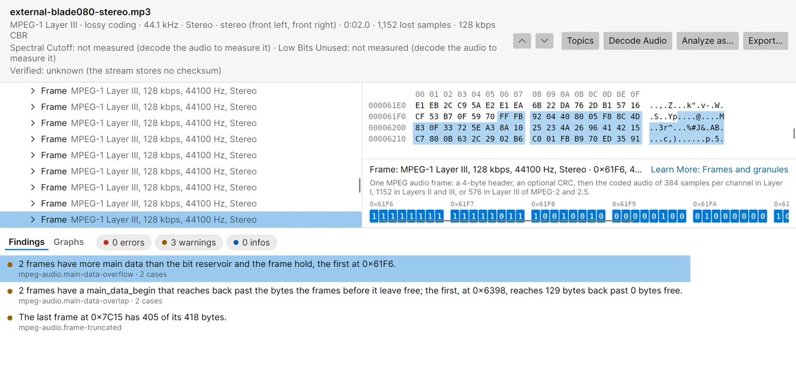
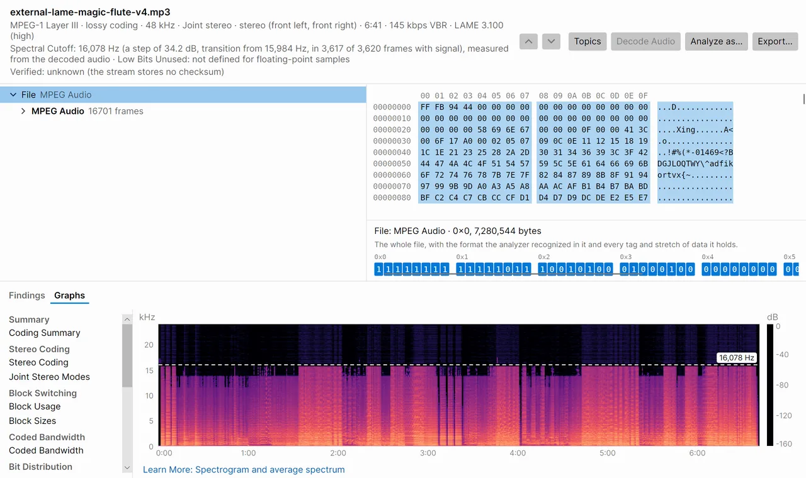

Graphical App
Browse a folder of audio files, then open any of them to see its structure, the bytes behind every field, its findings and its graphs. It shows the same report as the command-line tool.
The main window

The list has one row per file, filled in as the files are analyzed in the background. The columns are:
- format and codec, duration, bitrate (VBR or CBR), sample rate and channel mode, and channel layout;
- the encoder, with its confidence, and “Written by”, the software that wrote the file around the audio;
- tags, protection, and the findings counted by severity.
Click a column to sort by it. Durations and bitrates sort as numbers.
Opening files and folders
- Pick a folder in the tree on the left: home, music, desktop and the volumes.
- Use File, Open Folder (Ctrl+O, or Cmd+O on macOS).
- Drop files or folders onto the window.
- Name them on the command line:
encspect-gui song.mp3orencspect-gui ~/Music.
Include Subfolders walks the whole tree. Show Only Audio hides files in which no audio was found. Stop cancels a run. A folder seen before fills in at once from a cache of file summaries, and View, Refresh (F5, or Cmd+R on macOS) lists the folder again.
The app is the same download as the command-line tool: unpack the release archive and start encspect-gui. It is not signed, so the system asks the first time.
The detail window

Press Enter or double-click a file to open it. The window is reused for the next file you pick; “Open in New Window” in the list’s context menu keeps one on its file, for comparing two.
- Streams at the top, with codec, coding class, channel layout and, where known, the evidence about the file’s history.
- Structure tree. Every field with its value, unit, offset and length. Even a stream of 100,000 frames opens at once.
- Hex view. Selecting a node marks its bytes, down to single bits.
- Findings. Filter by severity; selecting one selects its node.
- Explanations. Hover a row for what the field is. The panel under the hex view adds a “Learn More” link to a background article, such as mid/side stereo or the bit reservoir.
- Analyze as… for a file whose format was not detected or detected wrongly.
- Export the report as text or JSON with Ctrl+S (Cmd+S on macOS).
Graphs

The Graphs tab draws the stream’s series, grouped under the same headings for every format: Summary, Stereo Coding, Block Switching, Coded Bandwidth, Bit Distribution, Prediction and Other.
- A quantity can be drawn in several forms, picked above the chart: for example Per Frame, Over Time and Distribution for the bitrate.
- Frame Map shows each frame as a square.
- Hover a point for its value. Click it to select the frame in the tree and hex view; selecting a frame in the tree marks it on the graph.
- Graphs can be used from the keyboard: Tab reaches the list, the view switcher and the chart, and the arrow keys move the cursor.
- F1 opens the background article for the selected node or graph.
Decoding and measurements

Choose Decode Audio in the detail window to decode the file once. That compares the checksums that cover decoded audio (the header then shows Verified: yes, no or unknown) and measures the audio. The Audio entries of the Graphs tab then show:
- Waveform, Spectrogram and Spectrum;
- Loudness and Figures: levels, loudness and true peak, with units.
Decoding reads the whole file, so it takes longer than the analysis. Stop ends it and leaves the analysis as it was. Figures are measurements, not verdicts.
Look and platforms
- Light and dark mode, the accent color and the font follow the system.
- File dialogs are the system’s, and macOS has its menu bar.
- Windows, macOS and Linux. On Linux the app runs on X11 (under XWayland on a Wayland desktop); native Wayland is experimental and opt-in.
- Help, About Encspect (the application menu on macOS) shows the version, which is the same string as
encspect --version.
The full reference
Every view, shortcut and setting is described in the graphical app documentation on GitHub. For scripts and batch work, see the command line.